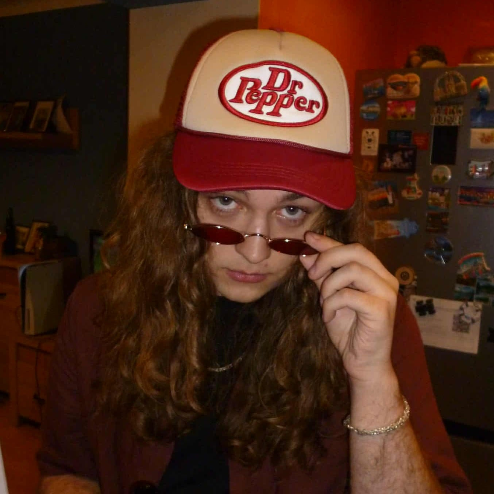
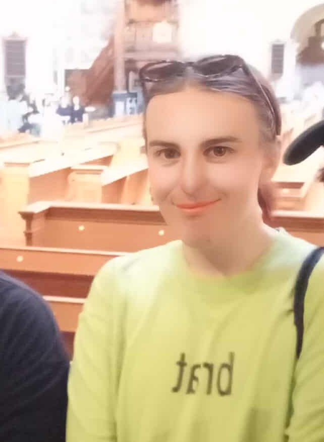
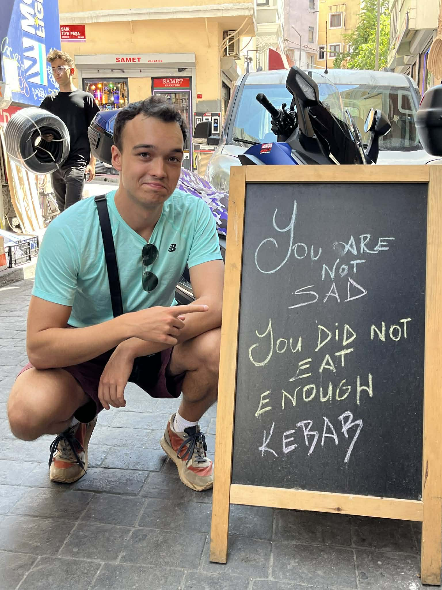
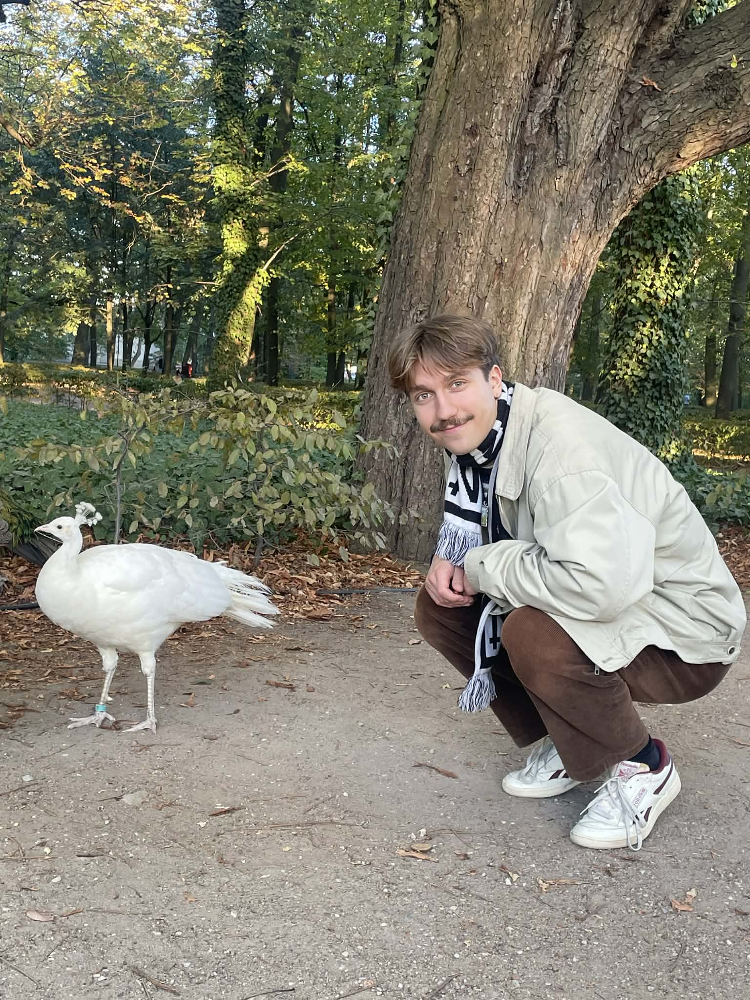
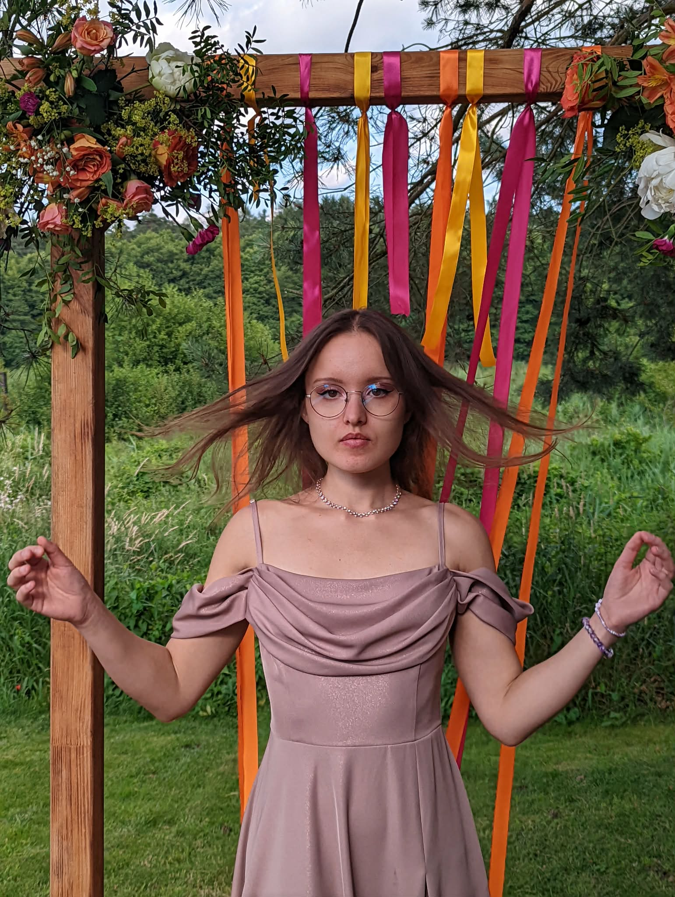

Meet the minds behind the grind
We are a group of Master's degree students specializing in CAD/CAM Systems Design at the Warsaw University of Technology (Faculty of Mathematics and Information Science). Beyond our academic background, we are a group of friends united by a shared passion for computer graphics and advanced mathematics. Each of us brings a unique specialization to the table—from algorithmic logic to visual arts. By combining these diverse talents, we were able to design and construct a game that translates abstract academic concepts into an engaging, immersive experience. When we are not coding or studying, we love to unwind together—whether it's challenging each other in board games or enjoying a night out in Warsaw.
Team Leader
Generalist with a love for 3D graphics, internet animation, indie games, and visual effects. Constantly jumping between different hobbies, exploring a bit of everything and rarely taking things too seriously. Brings curiosity, experimentation, and a relaxed vibe to the team.

Core Mechanics Developer
Michał’s interest in games started in early childhood and evolved into a passion for game development. Interested in computer science and physics, he began creating his own small game projects in high school. Wanting to build stronger foundations, he chose to study at the Faculty of Mathematics and Information Science. He enjoys both AAA and indie games, with a preference for movement-focused and agile gameplay. One day, he hopes to play an RPG with his friends and prepare ramen from scratch.
UI & Systems Designer
Jakub “KuƵu” Żuchowski has been nerd-sniped by math for as long as he can remember, and somehow ended up exactly where strong theory meets practical coding. On this project, he implemented most of the UI and built the item mechanics — including the shop, where your “just one more purchase” impulses are not only encouraged, but fully supported. Outside of debugging, KuƵu is a proud fan of graph theory, Heated Rivalry (yes, the Crave original about gay hockey players), and complaining — both competitively and recreationally.


Technical Animator
Piotr has always appreciated good visual effects. Therefore, in this project, he decided to finally learn how to work with animations on simple 3D models. The learning process presented many unexpected challenges that often required considerable effort to overcome, but the final results and the number of acquired skills justified all the sacrifices. Personally, Piotr is a massive fan of pizza, kebab and pizza-kebab. One should always be careful around him, though, as he is highly allergic to large amounts of AI slop.
Procedural Generation Developer
Wired for logic and math since he was a kid, Borys found the Faculty of Mathematics and Information Science to be the perfect match for his problem-solving obsession. But don’t typecast him as just a numbers guy. When the sun is out, he trades algorithms for two wheels, enjoying the flow of a good bike ride. Off the road, he prefers to unwind with Czech literature, specifically the tragicomic world of Bohumil Hrabal Come winter, however, his focus shifts to the kitchen, where he’s currently running a spicy experiment to prove that literally any dish can be improved by a generous spoonful of Gochujang.


Enemy & Trap Designer
Fascinated by maths since childhood, Zofia found the Faculty of Mathematics and Information Science to be the perfect blend of practical coding and strong theory. But don't let her academic focus fool you—she embodies the phrase 'still waters run deep.' A classically trained violinist and a die-hard Taylor Swift fan, she is deeply passionate about music. To balance this out, she spends her free time baking cakes or heavy lifting at the gym. And when she's not debugging code (or analyzing the Eras Tour setlist), she is the life of the party, always ready for a night out.